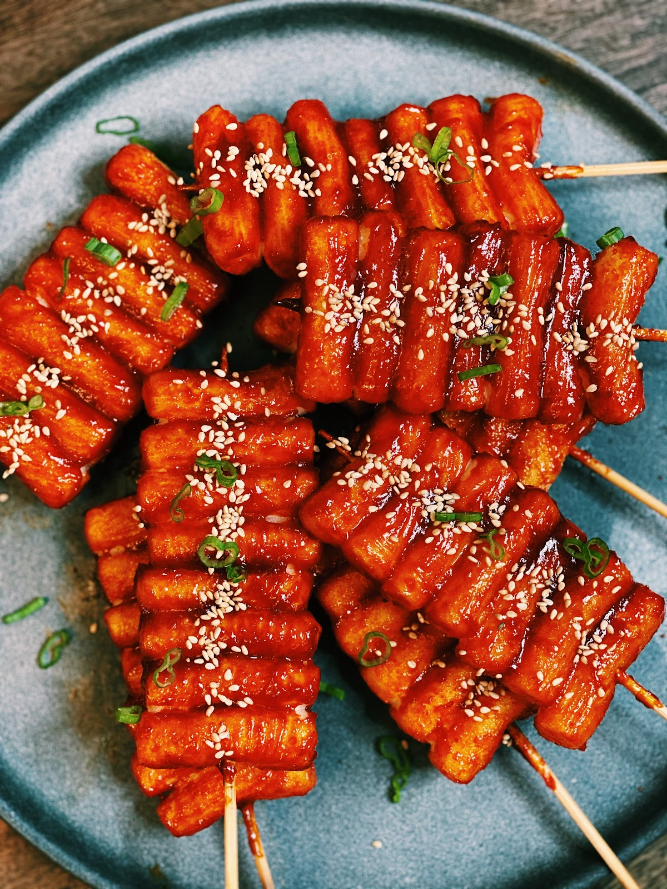

Grilled cheese & rice cake skewers

Cheese-tteok-kkochi
Yummy korean street food: cheese-tteok-kkochi
Ingredients
- 6 pieces of 3 inch long string chees
- 8 pieces of 3 inch long rice cakes
- 2 wooden skewers
- 1 tablespoon unsalted butter
- Sweetend condensed milk, optional
Steps
- Skewer rice cake and cheese alternatively, with 4 rice cakes and 3 cheeses. Make 2 skewers.
- Heat a non-stick heavy skillet. Turn down the heat to medium low.
- Add the butter and the skewers and let cook for 1 or 2 minutes until the bottom turns light brown.
- Turn them over with a spatula and cook another 1 to 2 minutes until the cheese and the rice cake turn light brown.
- Transfer the cooked skewers to a plate or put them into paper cups. Drizzle condensed milk over top and serve right away.